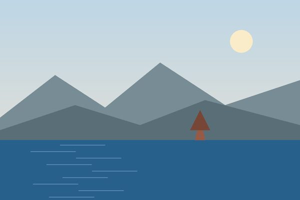

Սևանը աշնանը

Աշնանը լիճը հանգիստ է, զբոսաշրջիկներ գրեթե չկան։ Սա իմ սիրելի ժամանակն է նկարելու համար։
Կարճ գրառումներ այն մասին, ինչ սովորում եմ։

Աշնանը լիճը հանգիստ է, զբոսաշրջիկներ գրեթե չկան։ Սա իմ սիրելի ժամանակն է նկարելու համար։
Ամենադժվարը rowspan-ն էր․ եթե վանդակը միավորում ես, հաջորդ տողից պետք է հանես մեկ td։ Հիմա ամեն անգամ նախ հաշվում եմ վանդակները։
Առանց label-ի ֆորման աշխատում է, բայց էկրանընթերցիչը չի ասում, թե ինչ պետք է գրել դաշտում։ Իսկ label-ին սեղմելիս ֆոկուսը գնում է դաշտին։